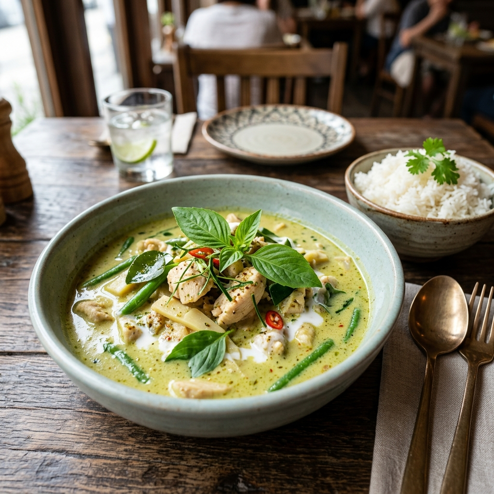

Description
A fragrant and spicy Thai classic. Tender chicken and vegetables simmered in a creamy coconut milk sauce infused with green chili, lemongrass, and Thai basil.
Ingredients
- 500g Chicken breast, sliced
- 3 tbsp Thai green curry paste
- 400ml Coconut milk (full fat)
- 1 cup Bamboo shoots or snap peas
- 1 Red bell pepper, sliced
- 1 tbsp Fish sauce
- 1 tbsp Brown sugar
- Handful of Thai basil leaves
Instructions
- Heat a splash of oil in a large pan or wok. Add curry paste and fry for 1-2 minutes until fragrant.
- Pour in 100ml of coconut milk and stir to combine with the paste.
- Add the chicken and cook until no longer pink on the outside.
- Stir in the remaining coconut milk, fish sauce, and sugar. Simmer for 5 minutes.
- Add the vegetables and cook for another 3-5 minutes until tender but still crisp.
- Turn off the heat and stir in the Thai basil leaves.
- Serve hot with jasmine rice.